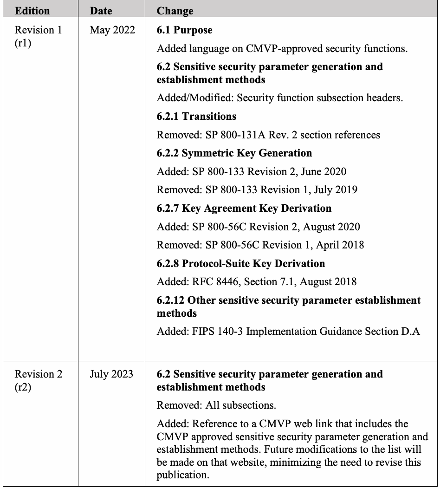

NIST Special Publication · PDF 原文抽出
Cryptographic Module Validation Program (CMVP)-Approved Sensitive Security Parameter Generation and Establishment Methods: CMVP Validation Authority Updates to ISO/IEC 24759
CMVP承認の機微なセキュリティパラメータ生成・確立方法
NIST SP 800-140D Rev. 2（Cryptographic Module Validation Program (CMVP)-Approved Sensitive Security Parameter Generation and Establishment Methods: CMVP Validation Authority Updates to ISO/IEC 24759）の英文と日本語訳を段落ごとに並べた閲覧用ページです。ISO/IEC 19790附属書DおよびISO/IEC 24759 6.16項に対するCMVP承認の機微なセキュリティパラメータ生成・確立方法を示します。 翻訳は有志による非公式のもので、NIST および米国商務省が作成・承認・推奨したものではありません。要件の確認にはNIST の正式版 PDFを参照してください。
PDF から抽出した原文は原本との照合待ちです。
NIST Special Publication NIST SP 800-140Dr2
NIST特別出版物 NIST SP 800-140Dr2
Cryptographic Module Validation
暗号モジュール検証
Program (CMVP)-Approved Sensitive Security Parameter Generation and Establishment
プログラム（CMVP）承認の機微なセキュリティパラメータの生成および確立
Methods:
方法：
CMVP Validation Authority Updates to ISO/IEC 24759
ISO/IEC 24759に対するCMVP検証機関の更新
Alexander Calis
Alexander Calis
This publication is available free of charge from: https://doi.org/10.6028/NIST.SP.800-140Dr2
本出版物は次の場所から無料で入手できる：https://doi.org/10.6028/NIST.SP.800-140Dr2
NIST Special Publication NIST SP 800-140Dr2
NIST特別出版物 NIST SP 800-140Dr2
Cryptographic Module Validation
暗号モジュール検証
Program (CMVP)-Approved Sensitive Security Parameter Generation and Establishment
プログラム（CMVP）承認の機微なセキュリティパラメータの生成および確立
Methods:
方法：
CMVP Validation Authority Updates to ISO/IEC 24759
ISO/IEC 24759に対するCMVP検証機関の更新
Alexander Calis Computer Security Division
Alexander Calis コンピュータセキュリティ部門
Information Technology Laboratory
情報技術研究所
This publication is available free of charge from: https://doi.org/10.6028/NIST.SP.800-140Dr2
本出版物は次の場所から無料で入手できる：https://doi.org/10.6028/NIST.SP.800-140Dr2
July 2023
2023年7月
［米国商務省の紋章。公的な標章のため、この非公式サイトには掲載していない。原本 PDF を参照。］
U.S. Department of Commerce Gina M. Raimondo, Secretary
米国商務省 Gina M. Raimondo長官
National Institute of Standards and Technology
米国国立標準技術研究所
Laurie E. Locascio, NIST Director and Under Secretary of Commerce for Standards and Technology
Laurie E. Locascio、NIST所長兼商務省標準技術担当次官
Certain commercial equipment, instruments, software, or materials, commercial or non-commercial, are identified in this paper in order to specify the experimental procedure adequately. Such identification does not imply recommendation or endorsement of any product or service by NIST, nor does it imply that the materials or equipment identified are necessarily the best available for the purpose.
本稿では、実験手順を十分に明示するために、商用または非商用の特定の機器、器具、ソフトウェア、または材料を特定している。このような特定は、NISTがいずれかの製品またはサービスを推奨または是認することを意味するものではなく、特定された材料または機器がその目的に対して必ずしも利用可能な最良のものであることを意味するものでもない。
There may be references in this publication to other publications currently under development by NIST in accordance with its assigned statutory responsibilities. The information in this publication, including concepts and methodologies, may be used by federal agencies even before the completion of such companion publications. Thus, until each publication is completed, current requirements, guidelines, and procedures, where they exist, remain operative. For planning and transition purposes, federal agencies may wish to closely follow the development of these new publications by NIST.
本出版物には、NISTが付与された法定責任に従って現在策定中である他の出版物への参照が含まれている場合がある。本出版物に記載された情報（概念および方法論を含む）は、そのような関連出版物が完成する前であっても、連邦機関が使用してよい。したがって、各出版物が完成するまでは、現行の要件、ガイドライン、および手順が存在する場合、それらは引き続き有効である。計画および移行のために、連邦機関はNISTによるこれらの新しい出版物の策定を注視するとよい。
Organizations are encouraged to review all draft publications during public comment periods and provide feedback to NIST. Many NIST cybersecurity publications, other than the ones noted above, are available at https://csrc.nist.gov/publications.
組織には、パブリックコメント期間中にすべてのドラフト出版物をレビューし、NISTにフィードバックを提供することが推奨される。上記以外の多くのNISTサイバーセキュリティ出版物は、https://csrc.nist.gov/publications で入手できる。
Authority
権限
This publication has been developed by NIST in accordance with its statutory responsibilities under the Federal Information Security Modernization Act (FISMA) of 2014, 44 U.S.C. § 3551 et seq., Public Law (P.L.) 113-283. NIST is responsible for developing information security standards and guidelines, including minimum requirements for federal information systems, but such standards and guidelines shall not apply to national security systems without the express approval of appropriate federal officials exercising policy authority over such systems. This guideline is consistent with the requirements of the Office of Management and Budget (OMB) Circular A-130.
本出版物は、2014年連邦情報セキュリティ近代化法（FISMA）、44 U.S.C. § 3551 et seq.、公法（P.L.）113-283に基づく法定責任に従って、NISTが策定したものである。NISTは、連邦情報システムの最低要件を含む情報セキュリティの標準およびガイドラインを策定する責任を負うが、そのような標準およびガイドラインは、国家安全保障システムに対して政策権限を行使する適切な連邦当局者の明示的な承認がない限り、当該システムに適用してはならない。本ガイドラインは、行政管理予算局（OMB）通達A-130の要件と整合している。
Nothing in this publication should be taken to contradict the standards and guidelines made mandatory and binding on federal agencies by the Secretary of Commerce under statutory authority. Nor should these guidelines be interpreted as altering or superseding the existing authorities of the Secretary of Commerce, Director of the OMB, or any other federal official. This publication may be used by nongovernmental organizations on a voluntary basis and is not subject to copyright in the United States. Attribution would, however, be appreciated by NIST.
本出版物のいかなる記述も、商務長官が法定権限に基づいて連邦機関に対して義務的かつ拘束力のあるものとした標準およびガイドラインに矛盾するものと解釈すべきではない。また、本ガイドラインは、商務長官、OMB長官、またはその他の連邦当局者の既存の権限を変更し、またはそれに取って代わるものと解釈すべきではない。本出版物は、非政府組織が任意で使用してよく、米国内では著作権の対象ではない。ただし、出典を明記していただければNISTとしては幸いである。
NIST Technical Series Policies
NIST技術シリーズの方針
Copyright, Use, and Licensing Statements
著作権、使用およびライセンスに関する声明
NIST Technical Series Publication Identifier Syntax
NIST技術シリーズ出版物識別子の構文
Publication History
出版履歴
Approved by the NIST Editorial Review Board on 2023-03-30 Supersedes NIST Special Publication (SP) 800-140Dr1 (May 2022) https://doi.org/10.6028/NIST.SP.800-140Dr1
2023-03-30にNIST編集審査委員会により承認 NIST特別出版物（SP）800-140Dr1（2022年5月）を置き換える https://doi.org/10.6028/NIST.SP.800-140Dr1
How to Cite this NIST Technical Series Publication:
このNIST技術シリーズ出版物の引用方法：
Calis A (2023) Cryptographic Module Validation Program (CMVP)-Approved Sensitive Security Parameter Generation and Establishment Methods: CMVP Validation Authority Updates to ISO/IEC 24759. (National Institute of Standards and Technology, Gaithersburg, MD), NIST Special Publication (SP) NIST SP 800-140Dr2. https://doi.org/10.6028/NIST.SP.800-140Dr2
Calis A（2023）「暗号モジュール検証プログラム（CMVP）承認の機微なセキュリティパラメータの生成および確立方法：ISO/IEC 24759に対するCMVP検証機関の更新」。（米国国立標準技術研究所、メリーランド州ゲイサーズバーグ）、NIST特別出版物（SP）NIST SP 800-140Dr2。https://doi.org/10.6028/NIST.SP.800-140Dr2
Author ORCID iDs
著者のORCID iDs
Alexander Calis: 0000-0003-1937-8129
Alexander Calis：0000-0003-1937-8129
Contact Information
連絡先情報
sp800-140-comments@nist.gov
sp800-140-comments@nist.gov
National Institute of Standards and Technology Attn: Computer Security Division, Information Technology Laboratory 100 Bureau Drive (Mail Stop 8930) Gaithersburg, MD 20899-8930
米国国立標準技術研究所 宛先：コンピュータセキュリティ部門、情報技術研究所 100 Bureau Drive（Mail Stop 8930）、Gaithersburg, MD 20899-8930
All comments are subject to release under the Freedom of Information Act (FOIA).
すべての意見は、情報公開法（FOIA）に基づく公開の対象となる。
Abstract
要旨
The approved sensitive security parameter generation and establishment methods listed in this publication replace the ones listed in International Organization for Standardization/International Electrotechnical Commission (ISO/IEC) 19790 Annex D and ISO/IEC 24759 paragraph 6.16, within the context of the Cryptographic Module Validation Program (CMVP). As a validation authority, the CMVP may supersede Annex D in its entirety. This document also supersedes SP 800-140Dr1.
本出版物に記載された承認済みの機微なセキュリティパラメータの生成・確立方法は、暗号モジュール検証プログラム（CMVP）の文脈において、国際標準化機構／国際電気標準会議（ISO/IEC）19790附属書DおよびISO/IEC 24759第6.16項に記載された方法を置き換える。検証機関として、CMVPは附属書Dの全体を置き換えることができる。本書はSP 800-140Dr1も置き換える。
Keywords
キーワード
Cryptographic Module Validation Program; CMVP; FIPS 140 testing; FIPS 140-3; ISO/IEC 19790; ISO/IEC 24759; sensitive security parameter establishment methods; sensitive security parameter generation; testing requirement; vendor evidence; vendor documentation.
暗号モジュール検証プログラム、CMVP、FIPS 140試験、FIPS 140-3、ISO/IEC 19790、ISO/IEC 24759、機微なセキュリティパラメータの確立方法、機微なセキュリティパラメータの生成、試験要件、ベンダー証拠、ベンダー文書。
Reports on Computer Systems Technology
コンピュータシステム技術レポート
The Information Technology Laboratory (ITL) at the National Institute of Standards and Technology (NIST) promotes the U.S. economy and public welfare by providing technical leadership for the Nation’s measurement and standards infrastructure. ITL develops tests, test methods, reference data, proof of concept implementations, and technical analyses to advance the development and productive use of information technology. ITL’s responsibilities include the development of management, administrative, technical, and physical standards and guidelines for the cost-effective security and privacy of other than national security-related information in federal information systems. The Special Publication 800-series reports on ITL’s research, guidelines, and outreach efforts in information system security, and its collaborative activities with industry, government, and academic organizations.
国立標準技術研究所（NIST）の情報技術研究所（ITL）は、国の計測および標準の基盤に対して技術的リーダーシップを提供することにより、米国の経済と公共の福祉を促進する。ITLは、情報技術の開発と生産的な利用を前進させるため、試験、試験方法、参照データ、概念実証の実装、および技術分析を開発する。ITLの責務には、連邦情報システムにおける国家安全保障関連以外の情報の費用対効果の高いセキュリティおよびプライバシーのための、管理的、事務的、技術的、および物理的な標準とガイドラインの策定が含まれる。Special Publication 800シリーズは、情報システムセキュリティにおけるITLの研究、ガイドライン、および普及活動、ならびに産業界、政府、および学術機関との協働活動について報告する。
Supplemental Content
補足コンテンツ
See https://csrc.nist.gov/projects/cmvp/sp800-140-series-info for details about the SP 800-140x series publications and their relationships to ISO/IEC 19790 and ISO/IEC 24759.
SP 800-140xシリーズの出版物、およびそれらとISO/IEC 19790およびISO/IEC 24759との関係についての詳細は、https://csrc.nist.gov/projects/cmvp/sp800-140-series-info を参照のこと。
Audience
対象読者
This document is intended for use by vendors, testing labs, and the CMVP.
本書は、ベンダー、試験機関、およびCMVPによる利用を意図している。
Table of Contents
目次
1. Scope — 1
1. 適用範囲 — 1
2. Normative references — 1
2. 引用規格 — 1
3. Terms and definitions — 1
3. 用語および定義 — 1
4. Symbols and abbreviated terms — 1
4. 記号および略語 — 1
5. Document organization — 1
5. 文書の構成 — 1
5.1. General — 1
5.1. 一般 — 1
5.2. Modification — 2
5.2. 変更 — 2
6. CMVP-approved sensitive security parameter generation and establishment requirements — 2
6. CMVP承認の機微なセキュリティパラメータ生成・確立要件 — 2
6.1. Purpose — 2
6.1. 目的 — 2
6.2. Sensitive security parameter generation and establishment methods — 2
6.2. 機微なセキュリティパラメータの生成・確立方法 — 2
Appendix A. Document Revisions — 3
付録A. 文書の改訂 — 3
Scope
適用範囲
This document specifies the Cryptographic Module Validation Program (CMVP)-approved sensitive security parameter generation and establishment methods and supersedes those specified in International Organization for Standardization/International Electrotechnical Commission (ISO/IEC) 19790 Annex D and ISO/IEC 24759 paragraph 6.16. This document also supersedes SP 800-140Dr1.
本書は、暗号モジュール検証プログラム（CMVP）が承認する機微なセキュリティパラメータの生成・確立方法を規定し、国際標準化機構／国際電気標準会議（ISO/IEC）19790附属書DおよびISO/IEC 24759第6.16項に規定された方法を置き換える。本書はSP 800-140Dr1も置き換える。
Normative references
引用規格
This section identifies the normative references cited as ISO/IEC 19790 and ISO/IEC 24759. The specific editions to be used are ISO/IEC 19790:2012 and ISO/IEC 24759:2017. Please note that the version 19790:2012 referenced here includes the corrections made in 2015. National Institute of Standards and Technology (2019) Security Requirements for Cryptographic Modules. (U.S. Department of Commerce, Washington, DC), Federal Information Processing Standards Publication (FIPS) 140-3. https://doi.org/10.6028/NIST.FIPS.140-3
本節では、ISO/IEC 19790およびISO/IEC 24759として引用する引用規格を示す。使用する具体的な版は、ISO/IEC 19790:2012およびISO/IEC 24759:2017である。ここで参照する19790:2012の版には、2015年に行われた訂正が含まれることに留意されたい。National Institute of Standards and Technology (2019) Security Requirements for Cryptographic Modules. (U.S. Department of Commerce, Washington, DC), Federal Information Processing Standards Publication (FIPS) 140-3. https://doi.org/10.6028/NIST.FIPS.140-3
Terms and definitions
用語および定義
The following terms and definitions supersede or are in addition to ISO/IEC 19790.
次の用語および定義は、ISO/IEC 19790のものを置き換えるか、またはそれに追加されるものである。
None at this time
現時点ではなし
Symbols and abbreviated terms
記号および略語
The following symbols and abbreviated terms supersede or are in addition to ISO/IEC 19790 and ISO/IEC 24759 throughout this document:
次の記号および略語は、本書全体を通じて、ISO/IEC 19790およびISO/IEC 24759のものを置き換えるか、またはそれらに追加されるものである：
CMVP Cryptographic Module Validation Program
CMVP 暗号モジュール検証プログラム
FIPS Federal Information Processing Standard
FIPS 連邦情報処理標準
ISO/IEC International Organization for Standardization/International Electrotechnical Commission
ISO/IEC 国際標準化機構／国際電気標準会議
Document organization
文書の構成
General
一般
Section 6 of this document replaces the approved sensitive security parameter generation and establishment methods of ISO/IEC 19790 Annex D and ISO/IEC 24759 paragraph 6.16. This document also supersedes SP 800-140Dr1.
本書の第6節は、ISO/IEC 19790附属書DおよびISO/IEC 24759第6.16項の承認済みの機微なセキュリティパラメータの生成・確立方法を置き換える。本書はSP 800-140Dr1も置き換える。
Modification
変更
This publication is a complete replacement of the CMVP-approved sensitive security parameter generation and establishment methods of ISO/IEC 19790 Annex C and ISO/IEC 24759 paragraph 6.16. There are no other modifications, additions, or deletions.
本出版物は、ISO/IEC 19790附属書CおよびISO/IEC 24759第6.16項の、CMVP承認の機微なセキュリティパラメータの生成・確立方法を完全に置き換えるものである。それ以外の変更、追加、または削除はない。
CMVP-approved sensitive security parameter generation and establishment requirements
CMVP承認の機微なセキュリティパラメータ生成・確立要件
Purpose
目的
This document identifies CMVP-approved sensitive security parameter generation and establishment methods. These are considered CMVP-approved security functions. It precludes the use of all other sensitive security parameter generation and establishment methods.
本書は、CMVPが承認する機微なセキュリティパラメータの生成・確立方法を特定する。これらはCMVP承認のセキュリティ機能とみなされる。本書は、これら以外のすべての機微なセキュリティパラメータ生成・確立方法の使用を排除する。
Sensitive security parameter generation and establishment methods
機微なセキュリティパラメータの生成・確立方法
For the current list of CMVP-approved sensitive security parameter generation and establishment methods, see https://csrc.nist.gov/projects/cmvp/sp800-140d.
CMVPが承認する機微なセキュリティパラメータ生成・確立方法の現行の一覧については、https://csrc.nist.gov/projects/cmvp/sp800-140d を参照のこと。
Appendix A. Document Revisions
附属書A. 文書の改訂
| Edition | Date | Change |
| Revision 1 (r1) | May 2022 | 6.1 Purpose Added language on CMVP-approved security functions. 6.2 Sensitive security parameter generation and establishment methods Added/Modified: Security function subsection headers. 6.2.1 Transitions Removed: SP 800-131A Rev. 2 section references 6.2.2 Symmetric Key Generation Added: SP 800-133 Revision 2, June 2020 Removed: SP 800-133 Revision 1, July 2019 6.2.7 Key Agreement Key Derivation Added: SP 800-56C Revision 2, August 2020 Removed: SP 800-56C Revision 1, April 2018 6.2.8 Protocol-Suite Key Derivation Added: RFC 8446, Section 7.1, August 2018 6.2.12 Other sensitive security parameter establishment methods Added: FIPS 140-3 Implementation Guidance Section D.A |
| Revision 2 (r2) | July 2023 | 6.2 Sensitive security parameter generation and establishment methods Removed: All subsections. Added: Reference to a CMVP web link that includes the CMVP approved sensitive security parameter generation and establishment methods. Future modifications to the list will be made on that website, minimizing the need to revise this publication. |
原本PDFの抜粋画像

| 版 | 日付 | 変更内容 |
| 改訂1（r1） | 2022年5月 | 6.1 目的：CMVP承認のセキュリティ機能に関する記述を追加。6.2 機微なセキュリティパラメータの生成・確立方法：セキュリティ機能の小節見出しを追加・変更。6.2.1 移行：SP 800-131A Rev. 2の節参照を削除。6.2.2 対称鍵の生成：SP 800-133 Revision 2（2020年6月）を追加し、SP 800-133 Revision 1（2019年7月）を削除。6.2.7 鍵合意鍵導出：SP 800-56C Revision 2（2020年8月）を追加し、SP 800-56C Revision 1（2018年4月）を削除。6.2.8 プロトコルスイート鍵導出：RFC 8446第7.1節（2018年8月）を追加。6.2.12 その他の機微なセキュリティパラメータ確立方法：FIPS 140-3実装ガイダンス第D.A節を追加。 |
| 改訂2（r2） | 2023年7月 | 6.2 機微なセキュリティパラメータの生成・確立方法：すべての小節を削除。CMVP承認の機微なセキュリティパラメータ生成・確立方法を含むCMVPウェブリンクへの参照を追加。今後の一覧の変更はそのウェブサイト上で行い、本出版物を改訂する必要を最小限にする。 |